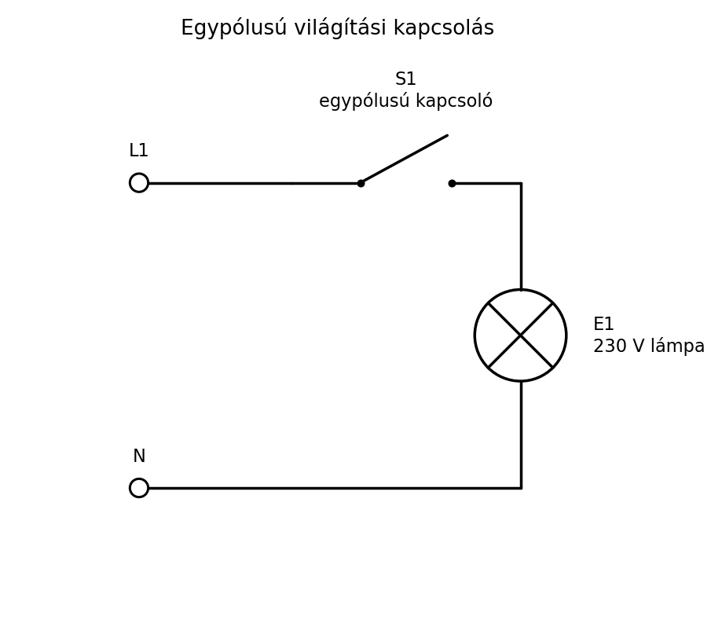
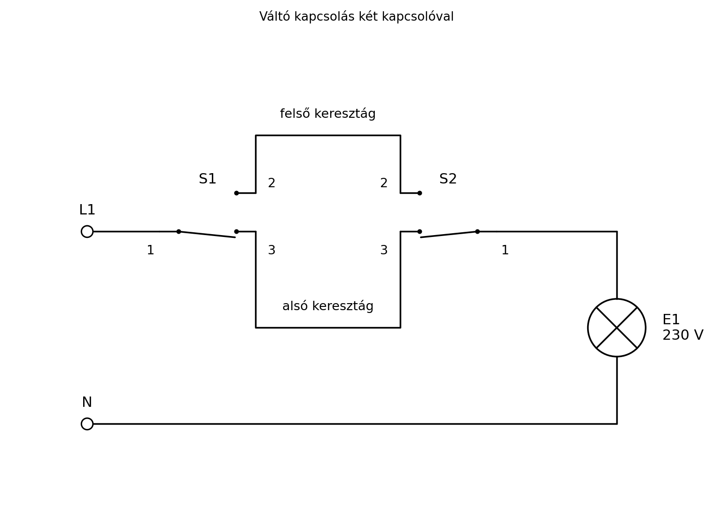

![Három panel. Bal: kapcsolási rajz, L1 – S1 kapcsoló – E1 lámpa – N, a lámpatesten PE. Közép: huzalozási rajz, az elosztóból jövő W1 kábel barna, kék és zöld-sárga ere az X1:1 (L), X1:2 (N), X1:3 (PE) kapocsra fut, a W2 kábel a kapcsolóhoz megy (barna: fázis le, barnával jelölt kék: kapcsolt fázis vissza az X1:4-re), a W3 a lámpához (barna: kapcsolt fázis, kék: N, zöld-sárga: PE). Jobb: 3,5 × 3,0 m-es szoba alaprajza, S1 kapcsoló az ajtó kilincs felőli oldalán, E1 lámpahely a mennyezet közepén, X1 kötődoboz, a W1, W2, W3 nyomvonalon három-három vezetékszám-vonás.](figures/img/ve043-4.png)
Statikus változat (mint a PDF-ben)
Amikor egy lakás felújításakor a régi szerelést bővíted, gyakran nem elég annyit tudni, hogy „a sárga-zöld a föld”. A kivitelezőnek látnia kell, hogy melyik vezeték hová megy, melyik kapocsra csatlakozik, és miért nem ég a lámpa akkor, amikor az egyik kapcsolót átváltod. Ehhez háromféle rajzot kell tudni olvasni: a kapcsolási rajzot, a huzalozási rajzot és a szerelési rajzot. Ezek ugyanarról az áramkörről beszélnek, csak más-más kérdésre válaszolnak.
A kapcsolási rajz a működést mutatja, a huzalozási rajz a vezetékek útját, a szerelési rajz pedig a falon elfoglalt helyet. A hibakeresés során mindháromra szükség lehet: a kapcsolási rajzból megérted, hogyan kellene működnie; a huzalozási rajzból megtalálod, hogy hol kell mérned; a szerelési rajzból pedig azt, hogy fizikailag hol van a szerelvény vagy a kötődoboz.
A villamos dokumentációkban többféle rajzot használnak, és ezeket gyakran egymás mellett, de eltérő céllal készítik.
Definíció. Az áramúti rajz – a gyakorlatban gyakran kapcsolási rajznak is nevezzük – a készülékek és vezetékek villamos kapcsolatát mutatja, a fizikai elrendezéstől függetlenül. Arra ad választ, hogyan halad az áram az áramkörben. Lehet egyvonalas, amikor több vezetőt egyetlen vonal jelöl, és többvonalas, amikor minden áramköri vezetőt külön-külön rajzolnak meg.
Definíció. A huzalozási rajz – más néven bekötési rajz – a tényleges vezeték-összekötéseket, kábelszámokat, kapocsszámokat, színeket és kötődobozos elosztásokat mutatja. Ez a dokumentum a hibakeresés és a bekötés során a leggyakorlatibb munkatérkép.
Definíció. A szerelési rajz – vagy telepítési terv – az épület alaprajzán vagy szerkezeti rajzán ábrázolja, hogy a kapcsolók, lámpák, kötődobozok, kábelnyomvonalak hol helyezkednek el. A szerelési rajz a kivitelezéshez kell: hova fúrjuk a dobozt, hova vésünk vagy vezetünk kábelcsatornát.
Szabvány. Az ábrázolási módokra a rajzjeleket az MSZ EN 60617 sorozat, a dokumentációk szerkezetét pedig az MSZ EN 61082 sorozat írja le (ellenőrizendő: az aktuális kiadás). A feszültségmentesítés és a szerelés biztonsági követelményei a villamos berendezések szabványában, például az MSZ HD 60364 sorozatban találhatók.
Az alábbi ábra ugyanazt az egypólusú világítási kapcsolást mutatja egymás mellett a három rajzon, azonos jelöléssel (S1 kapcsoló, E1 lámpa, X1 kötődoboz, W1–W3 kábel):
Olvasd az ábrát panelenként, és keresd meg mindhárom rajzon ugyanazt az elemet. A kapcsolási rajz a működésre válaszol (hogyan jut el az áram L1-től az S1-en és az E1-en át az N-ig); a huzalozási rajz arra, hogy melyik kábel melyik ere melyik kapocsra kerül (például a W2 kék ere, barnával megjelölve, viszi vissza a kapcsolt fázist az X1:4-re); a szerelési rajz arra, hogy hol van a szerelvény a falon és merre fut a nyomvonal (a ferde vonások a vezetékek számát mutatják: mindhárom szakaszon 3). A HTML-változatban egy elemre (pl. W2) mutatva mindhárom panelen kiemelődik ugyanaz az elem. Kérdés magadnak: a szerelési rajzon hány vezeték fut a kötődoboz és a kapcsoló között, és a huzalozási rajz szerint mi a feladatuk? (Három: barna fázis le, barnával jelölt kék kapcsolt fázis vissza, zöld-sárga PE.)
A kapcsolási rajz nélkül a működést nem érted, a huzalozási rajz nélkül nem tudod bekötni, a szerelési rajz nélkül pedig nem tudod, mit hová szerelj.
A legegyszerűbb világítási áramkör az egypólusú kapcsolás: egy kapcsolóval működtetünk egy lámpát vagy egy lámpacsoportot. Villamos szempontból a kapcsoló a fázisvezetőt szakítja meg, a nullavezető közvetlenül a lámpához megy.
Szabály. Világítási áramköröknél a kapcsolót a fázisvezetőbe kell kötni, a nullavezetőt nem kapcsoljuk. Ha a nullát szakítanánk meg, a lámpa ugyan kialudna, de a foglalat fázisoldali csatlakozója feszültség alatt maradhat, ami áramütésveszélyes.
A kapcsolási rajz így néz ki:

A rajzról leolvasható áramút: L1 → S1 → E1 → N. A
kapcsoló nyitott állásában nincs zárt áramkör, a lámpa nem ég. Zárt
állásában a fázis eljut a lámpához, az áram a nullán visszafolyik, a
lámpa világít.
A huzalozási rajz ebből úgy lesz, hogy a kábelek tényleges útját, az
erek színét és a kapcsokat is bejelöljük. Tegyük fel, hogy a
lakáselosztóból a kötődobozba érkezik egy NYM-J 3×1,5
kábel, a kapcsolóhoz megy egy NYM-J 3×1,5 kábel, a lámpához
pedig ugyancsak NYM-J 3×1,5 kábel.
Megjegyzés. A háromerű (3G, -J) kábelben nincs fekete ér: a kapcsolóhoz menő kábel kék erét fázisként használjuk, ezért mindkét végén tartósan meg kell jelölni (barna jelölőgyűrű, szigetelőcső; ellenőrizendő: MSZ EN 60445, MSZ HD 60364-5-51); a zöld-sárga eret más célra használni tilos. Ha fekete ér kell, négy- vagy ötérű kábelt használunk (4G: barna, fekete, szürke, zöld-sárga; 5G: barna, fekete, szürke, kék, zöld-sárga – ellenőrizendő: MSZ EN 60445 és a kábel-termékszabvány). A kötődobozban minden csoport külön sorkapocsba kerül, így a bekötés áttekinthető és mérhető.
A soros (csillár)kapcsoló egy közös bemenettel (fázis) és két kimenettel két lámpacsoportot kapcsol, a két billentyűvel külön-külön. A kétpólusú kapcsoló ettől eltérő: egy karral a fázist és a nullát is megszakítja.
A soros kapcsolás áramútja szövegesen:
L1 → F1 → S1 (közös L-kapocs) → az S1a billentyű kimenete
(↑1) → E1.1 lámpacsoport → N, az S1b billentyű kimenete
(↑2) → E1.2 lámpacsoport → N; a két lámpacsoport nullája és
PE-je közös. A kapcsolást a Világítási áramkörök:
egypólusú, soros, váltó és kereszt alfejezet tárgyalja
részletesen.
A rajzfajták közti átjárást egyetlen kapcsoláson érdemes végigkövetni. Az alábbi összesítő ábra nem új rajz: a Világítási áramkörök: egypólusú, soros, váltó és kereszt alfejezet (16.2) három kanonikus csillárkapcsolás-rajzát teszi egymás mellé, ugyanazokkal a jelekkel (F1 kismegszakító, S1 csillárkapcsoló S1a/S1b billentyűvel, E1 csillár E1.1/E1.2 fényforráscsoporttal, KD kötődoboz). A részleteket a 16.2-ben teljes méretben, interaktívan is megnézheted.
![Három panel. (a) Áramúti rajz: L – F1 B10 – az S1 csillárkapcsoló közös L kapcsa, onnan az S1a és S1b billentyű; az ↑1 kimenet az E1.1, az ↑2 kimenet az E1.2 fényforráscsoportra fut, mindkettő a közös N-re zárul, a lámpatesten PE; mindkét billentyű nyitva. (b) Alaprajzi jel: szoba ajtóval, F1 felől 3 vezetékes nyomvonal a KD kötődobozig, onnan 4 vezetékes nyomvonal az E1 lámpahelyhez és 3 vezetékes az ajtó melletti S1 csillárkapcsolóhoz. (c) Huzalozási és dobozos bekötési rajz: a kötődobozban öt összekötő (L, ↑1, ↑2, N, PE), a tápkábel 3, a kapcsolókábel 3 (barna L, fekete ↑1, szürke ↑2), a csillárkábel 4 eret (fekete ↑1, szürke ↑2, kék N, zöld-sárga PE) hoz; 10 érvég, 5 összekötő.](figures/img/ve043-6.png)
Olvasd össze a három panelt: keresd meg az ↑1 kapcsolt fázist mindháromban (az (a)-n az S1a kimenete, a (b)-n a kapcsoló felé menő 3 vezetékes nyomvonal egyik ere, a (c)-n a fekete ér a kapcsolótól a dobozon át a csillár ↑1 kapcsáig). A negyedik nézetet, a falnézeti szerelési rajzot (a dobozok magassága a falon) a Felmérés, tervértelmezés és szerelési technológia alfejezet szerelési sávjai adják.
| Rajzfajta | Mit mutat? | Mire használja a szerelő? | Mi nem látszik rajta? |
|---|---|---|---|
| Áramúti (kapcsolási) rajz – (a) | a működést: melyik billentyű melyik lámpacsoportot kapcsolja, a közös N és PE | működés megértése, hibakeresés áramút szerint | a kábelek, a dobozok és az érszínek |
| Alaprajzi (installációs) jel – (b) | a szerelvények helyét az alaprajzon és a nyomvonalak vezetékszámát (3/4/3 vonás) | anyagkiírás, nyomvonal-kijelölés, vésés | hogy melyik ér melyik kapocsra megy |
| Huzalozási és dobozos bekötési rajz – (c) | minden ér színét, kábelét és kapcsát, a dobozbeli összekötőket | a tényleges bekötés a kötődobozban, a kapcsolóban és a csillárban | a falbeli magasságokat és a pontos nyomvonalat |
| Falnézeti szerelési rajz (Felmérés, tervértelmezés és szerelési technológia) | a dobozok és a nyomvonal helyét a falon, magassággal | dobozhelyek kimérése, vésés | a villamos működést |
| Kérdés | Melyik rajzból válaszolsz? |
|---|---|
| Melyik billentyű melyik izzócsoportot kapcsolja? | áramúti rajz (a) |
| Melyik ér melyik kapocsra kerül a dobozban? | huzalozási-dobozos rajz (c) |
| Hol van a kapcsoló és a lámpa, merre fut a cső/kábel? | alaprajz (b), falnézeti szerelési rajz |
| Hány eres, milyen kábel kell az egyes szakaszokra? | huzalozási rajz (c) + az alaprajz vonásai (b) |
A csillárkapcsolóhoz 3 ér megy le: a fázis (L) és a két visszajövő kapcsolt fázis (↑1, ↑2); N nem kell a kapcsolóhoz. Ha a kapcsolóhoz menő kábelben védőér is van (4G kábel: 3 aktív ér + zöld-sárga), azt a dobozban a PE-összekötőre, a kapcsolónál fém szerelvény esetén annak PE-kapcsára kötjük. A csillárhoz 4 ér megy: a két kapcsolt fázis (↑1, ↑2), az N és a PE. Egy 3G kábellel (L, N, PE) a kapcsoló nem köthető be, mert oda 3 aktív vezető kell (a zöld-sárga ér aktív vezetőként nem használható).
Megjegyzés. A kétpólusú kapcsoló érintkezői a fázis- és a nullavezetékben is megszakítanak; nem keverendő össze a soros (csillár)kapcsolóval. Nedves vagy kültéri környezetben, illetve bizonyos fogyasztóknál követelmény lehet, hogy a kapcsoló mindkét pólust leválassza. A rajzon két kapcsolóérintkezőt rajzolnak, amelyeket egy szaggatott vonal köt össze, jelezve, hogy egyetlen mechanikus kar működteti őket.
A váltó kapcsolás két kapcsolóval vezérel egy lámpát, például egy lépcső alsó és felső végén. A váltó kapcsoló egy közös érintkezővel és két váltóérintkezővel rendelkezik. A két kapcsoló váltóérintkezőit keresztben összekötjük, és a lámpa akkor ég, ha a két közös érintkező ugyanarra a keresztágra kapcsolódik.
A kapcsolási rajz a következő:

A rajzon a váltó kapcsolókat itt egy közös pontból induló
váltóérintkezőkkel ábrázoltuk. A valódi szerelvényeken a kapocsjelölés
gyártófüggő; gyakran a közös kapocs L, a két váltóér
1 és 2, vagy COM,
NO, NC jelölést kap. A bekötés előtt mindig a
szerelvény kapocstábláját kell ellenőrizni.
A kapcsolás logikája egyszerű:
| S1 közös kapcsolás | S2 közös kapcsolás | Lámpa |
|---|---|---|
| Felső ág | Felső ág | ég |
| Felső ág | Alsó ág | nem ég |
| Alsó ág | Felső ág | nem ég |
| Alsó ág | Alsó ág | ég |
Kettőnél több kapcsolási hely esetén a két váltó kapcsoló közé keresztváltó kapcsolókat építünk. A keresztváltó négy csatlakozóponttal rendelkezik, és a két bejövő vezeték párosítását cseréli fel. A rajzon a keresztváltót is szaggatott vonallal összekötött érintkezőkkel ábrázolják. Bekötésénél mindig a kapocstáblán jelölt párokat kell követni; a hibás párosítás miatt a váltókapcsoló logika felborul.

Az ábrán az S2 keresztváltó négy kapcsa közül a bal oldali kettőre az a és b, a jobb oldali kettőre a c és d keresztág csatlakozik. Alapállásban a keresztváltó egyenesen köt (a–c, b–d, folytonos vonal), átváltva keresztben (a–d, b–c, szaggatott vonal). Így bármelyik kapcsoló átváltása megfordítja a lámpa állapotát; a HTML-változatban a kapcsolókra kattintva ez ki is próbálható, és a keresztváltó kikapcsolásával a fenti váltókapcsolás táblázata is ellenőrizhető. A Világítási áramkörök: egypólusú, soros, váltó és kereszt alfejezet ugyanezt a kapcsolást (S1 váltó, S2 kereszt, S3 váltó) a kapocsszámokkal rajzolja: az itteni a, b a keresztkapcsoló 1, 2, a c, d pedig a 3, 4 kapcsa.
A lépcsőházi világítás rajza több szempontból is eltér. A cél az, hogy a folyosón vagy lépcsőházban elhelyezett több nyomógomb ugyanazt a lámpakört vezérelje. Ezt ma általában impulzusrelével vagy lépcsőházi időrelével oldják meg.
Az impulzusrelé tekercsére párhuzamosan kötött nyomógombok adják a
vezérlőjelet. Minden lenyomás egy impulzust ad, a relé érintkezője
átbillen, a lámpa be- vagy kikapcsol. A rajzon a nyomógombok jele
nyitott érintkező, a relé tekercse K1, a munkaérintkezője
pedig K1 jelölést kap. A lépcsőházi időrelé hasonló, de a
bekapcsolás után egy beállított idő leteltével önműködően kikapcsol. Ez
energiamegtakarítást és biztonságot ad a közlekedőterületeken.
Az alábbi kapcsolási rajz a vezérlő- és a főáramkört egymás mellett mutatja:

A rajzról leolvasható: bármelyik nyomógomb megnyomása ugyanazt a K1 tekercset kapcsolja feszültségre, ezért a lámpák mindhárom helyről be- és kikapcsolhatók; a lámpák árama nem a nyomógombokon, hanem a K1 érintkezőjén folyik.
Figyelem. A lépcsőházi automata nyomógombjai többnyire 230 V-os hálózati feszültségen működnek, ugyanúgy, mint a lámpakör; törpefeszültségű (pl. 12/24 V) nyomógombkör csak akkor van, ha a terv így írja elő, és ezt a terven egyértelműen jelölni kell. A rajzolásnál külön választjuk a főáramkört (lámpa, megszakító, reléérintkező) és a vezérlőáramkört (nyomógombok, relétekercs).
A huzalozási rajz akkor jó, ha a rajzból egyértelműen azonosítható minden vezeték és kapocs. A gyakorlatban ehhez három adatot kell megadnunk:
W1,
W2, amely a kábelnyomvonallal együtt megmondja, melyik
kábelről beszélünk.W2/1,
vagy a rajzjel mellett a szín: barna, kék,
zöld-sárga.-S1:1,
-E1:PE, amely megmondja, hogy a vezeték a készülék melyik
kapcsára kerül.
Az ábra az egypólusú kapcsolás huzalozási rajza egy központi kötődobozzal. Minden érnél leolvasható a kábelszám (W1, W2, W3), az érszín (betűkóddal is: BN barna, BU kék, GNYE zöld-sárga) és a sorkapocs (-X1:1…-X1:4). A háromerű kábelben nincs fekete ér, ezért a kapcsolóhoz menő W2 kábel kék ere viszi vissza a kapcsolt fázist; ezt az eret mindkét végén tartósan fázisként (barna jelöléssel) meg kell jelölni (ellenőrizendő: MSZ EN 60445). A HTML-változatban egy érre kattintva a kapcsolási rajz megfelelő szakasza kiemelődik.
A bekötést kockázatmentesen gyakorolhatod a virtuális kötődobozban. A gyakorló négy kapcsolást kínál (egypólusú, csillár-, váltó- és keresztkapcsolás); a kábelek erei a készülékek oldalán már be vannak kötve, neked a kötődobozban kell az érvégeket a sorkapcsokra kötnöd. Az „Ellenőrzés” a kapcsolók minden állás-kombinációjában kiértékeli a kört, és megnevezi a tipikus hibákat: zárlat (L és N egy kapcson), fázis a PE-n, N–PE összekötés, bekötetlen PE, a nullát szakító kapcsoló, a lámpa nem kapcsolható valamelyik kapcsolóról (a közös kapocs és egy keresztág felcserélése), és figyelmeztet a jelöletlen, fázisként használt kék érre. Az „Új feladat” véletlen kapcsolást és kábelelrendezést ad (a feladatszám kijelezve). A nyomtatott változatban az egypólusú mintafeladat megoldását látod:
Ellenőrizd a mintán: hány ér fut az X1:3 kapocsra, és miért mindegyik zöld-sárga? (Három: minden kábel PE-erét a PE-kapocsra kötjük, más célra nem használjuk.) Utána a HTML-változatban oldd meg a váltó- és a keresztkapcsolást is, majd a feladatgyűjteménybeli (12.2) gyakorlati útmutató váltókapcsolásos feladatában rajzold át a kapcsolási rajzot huzalozási rajzzá.
A rajzok olvasásánál mindig a rajz–valóság–mérés hármast használjuk. Először a rajz alapján megállapítjuk, minek hová kellene kötve lennie. Ezután a valós szerelésben megnézzük, hogy a színek, kapocsszámok és kábelek tényleg ott vannak-e. Végül a feszültségmentesen végzett folytonosság- vagy szigetelési méréssel igazoljuk, hogy a vezetékek a rajz szerint összeköttetésben vannak.
Valós eset. Egy társasházi lakásban a felújítás során a villanyszerelő a régi kötődobozokban nem talált kapocsfeliratokat. A lakástulajdonos kérte, hogy a lépcsőfeljáró fölötti lámpát két helyről lehessen kapcsolni. A szerelő először a kapcsolási rajzot készítette el, majd a huzalozási rajzon berajzolta a meglévő kábelnyomvonalakat. Feszültségmentesítés után minden vezetéket multiméterrel beazonosított, és a kötődobozban feliratozta a kapcsokat. A beszerelés után a váltó kapcsolás mindkét kapcsolóról jól működött. A tanulság: ha a szerelés közben dokumentáljuk a kapcsokat, a jövőbeni hibakeresés percek alatt elvégezhető.
Gyakorlás: ennek az alfejezetnek a kidolgozott példái, gyakorlatai és megoldással ellátott feladatai az Összefoglaló feladatgyűjtemény villanyszerelő tanulóknak című kötet 12.2 szakaszában találhatók.
A villamos rajzok olvasása a villanyszerelő napi munkája. A kapcsolási rajz a villamos működést, az áramutat és a kapcsolólogikát mutatja; a huzalozási rajz a vezetékek tényleges útját, kábelszámait, érszámait, színeit és kapocsazonosítóit; a szerelési rajz a szerelvények és nyomvonalak fizikai helyét. A világítási alapkapcsolások: egypólusú, soros (csillár), váltó, keresztváltó és lépcsőházi; a kétpólusú kapcsoló (fázist és nullát is megszakít) ettől külön fogalom. A kapcsoló mindig a fázist szakítja meg, a nullát nem kapcsoljuk. A huzalozási rajz minden vezetéknél legalább három adatot tartalmazzon: kábelszám, érszám vagy érszín, és kapocsazonosító. A rajz–valóság–mérés hármas a hibakeresés alapja: először a rajz, majd a valódi bekötés, végül a feszültségmentes mérés. A bemutatott kapcsolási rajzokat a későbbi alfejezetek használják a tervrajzokon és a gyakorlati bekötéseknél, különösen az Alaprajzok, fővezetéki terv és egyvonalas rajz és a Világítási áramkörök: egypólusú, soros, váltó és kereszt fejezetekben.
Az alfejezet a magyarországi és európai gyakorlat szerint készült. A rajzjelek az MSZ EN 60617, a dokumentációk szerkezete az MSZ EN 61082 sorozat alapján hivatkozott; a pontos szakasz- és táblázatszámokat, valamint a gyártóspecifikus kapocsjelöléseket a kiadás előtt ellenőrizni kell. A feszültségmentesítés és a szerelési szabályok a MSZ HD 60364 sorozat szerint érvényesek, de konkrét határértékeket ez az alfejezet nem ad meg.